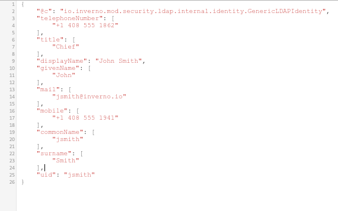

Inverno Framework LDAP Security Guide
Author: Jeremy Kuhn
What you'll learn
This guide shows how to use an LDAP authenticator to authenticate users against an LDAP server.
It also shows how to resolve the identity of the authenticated user from the LDAP server.
What you'll need
- A Java™ Development Kit (OpenJDK) at least version 16.
- Apache Maven at least version 3.6.
- An Integrated Development Environment (IDE) such as Eclipse or IDEA although any text editor will do.
- An secured Inverno Web application, such as the Inverno Ticket application following the Inverno Framework Role-based Access Control Guide.
- A basic understanding of LDAP.
This guide follows the Inverno Framework Role-based Access Control Guide. In this guide you will replace the user authenticator backed by a Redis user repository with an LDAP authenticator to authenticate users against an LDAP server.
The complete Inverno Ticket application can be found in GitHub.
Step 1: Declare Inverno security LDAP dependencies
The first thing to do is to add dependencies to the Inverno LDAP module which provides an LDAP client and to the Inverno security LDAP module which provide an LDAP authenticator and an LDAP identity resolver.
These dependencies should be first added to the pom.xml build descriptor of the project:
<?xml version="1.0" encoding="UTF-8"?>
<project xmlns="http://maven.apache.org/POM/4.0.0" xmlns:xsi="http://www.w3.org/2001/XMLSchema-instance"
xsi:schemaLocation="http://maven.apache.org/POM/4.0.0 http://maven.apache.org/xsd/maven-4.0.0.xsd">
<modelVersion>4.0.0</modelVersion>
<parent>
<groupId>io.inverno.dist</groupId>
<artifactId>inverno-parent</artifactId>
<version>1.6.1</version>
</parent>
<groupId>io.inverno.guide</groupId>
<artifactId>ticket</artifactId>
<version>1.0-SNAPSHOT</version>
<dependencies>
...
<dependency>
<groupId>io.inverno.mod</groupId>
<artifactId>inverno-ldap</artifactId>
</dependency>
<dependency>
<groupId>io.inverno.mod</groupId>
<artifactId>inverno-security-ldap</artifactId>
</dependency>
...
</dependencies>
</project>
You can now add dependencies to io.inverno.mod.ldap and io.inverno.mod.security.ldap modules in the module-info.java descriptor.
@io.inverno.core.annotation.Module
module io.inverno.guide.ticket {
...
requires io.inverno.mod.ldap;
requires io.inverno.mod.security.ldap;
...
}
You should now be all set and you can move on and change the authentication and identification process.
Step 2: Authenticate with LDAP
The Inverno security-ldap module provides the LDAPAuthenticator which authenticates login credentials against an LDAP server and returns an LDAPAuthentication which exposes the name, DN and groups of the authenticated user.
The LDAPAuthenticator requires an LDAPClient to communicate with the LDAP server, the LDAPClient is provided by the ldap module and can then be injected in the SecurityConfigurer to create the authenticator.
The
LDAPClientconnects toldap://localhost:1389by default, this can be changed by configuration.
Let's change the SecurityConfigurer to use the LDAPAuthenticator instead of the UserAuthenticator:
package io.inverno.app.ticket.internal.security;
...
import io.inverno.mod.security.ldap.authentication.LDAPAuthentication;
import io.inverno.mod.security.ldap.authentication.LDAPAuthenticator;
...
@WebRoutes({
@WebRoute(path = { "/login" }, method = { Method.GET }),
@WebRoute(path = { "/login" }, method = { Method.POST }),
@WebRoute(path = { "/logout" }, method = { Method.GET }, produces = { "application/json" }),
})
@Bean( visibility = Bean.Visibility.PRIVATE )
public class SecurityConfigurer implements WebRoutesConfigurer<SecurityContext<PersonIdentity, RoleBasedAccessController>>, WebInterceptorsConfigurer<InterceptingSecurityContext<PersonIdentity, RoleBasedAccessController>>, ErrorWebRouterConfigurer<ExchangeContext> {
private final LDAPClient ldapClient;
...
public SecurityConfigurer(LDAPClient ldapClient, JWSService jwsService) {
this.ldapClient = ldapClient;
...
}
@Override
public void configure(WebRoutable<SecurityContext<PersonIdentity, RoleBasedAccessController>, ?> routes) {
routes
...
.route()
.path("/login")
.method(Method.POST)
.handler(new LoginActionHandler<>(
new FormCredentialsExtractor(),
new LDAPAuthenticator(this.ldapClient, "dc=inverno,dc=io")
.failOnDenied()
.flatMap(authentication -> this.jwsService.builder(LDAPAuthentication.class)
.header(header -> header
.keyId("tkt")
.algorithm(OCTAlgorithm.HS512.getAlgorithm())
)
.payload(authentication)
.build(MediaTypes.APPLICATION_JSON)
.map(JWSAuthentication::new)
),
LoginSuccessHandler.of(
new CookieTokenLoginSuccessHandler<>(),
new RedirectLoginSuccessHandler<>()
),
new RedirectLoginFailureHandler<>()
))
...
...
}
As you can see, the user repository is no longer required and the LDAPClient is now injected instead. The LDAPAuthenticator simply replaces the UserAuthenticator but the JWS token creation remains almost untouched.
At this point you can consider completely removing the
UserRepositoryWrapperbean as it is not used anymore.
Step 3: Resolve identity from LDAP
The SecurityConfigurer is still declaring PersonIdentity which cannot be resolved from an LDAPAuthentication, as a result at this stage the application is not runnable and you need to replace the PersonIdentity by the LDAPIdentity.
You must change this in the SecurityConfigurer and also replace the UserIdentityResolver by an LDAPIdentityResolver in the SecurityInterceptor:
package io.inverno.app.ticket.internal.security;
...
import io.inverno.mod.security.ldap.authentication.LDAPAuthentication;
import io.inverno.mod.security.ldap.authentication.LDAPAuthenticator;
import io.inverno.mod.security.ldap.identity.LDAPIdentity;
import io.inverno.mod.security.ldap.identity.LDAPIdentityResolver;
...
@WebRoutes({
@WebRoute(path = { "/login" }, method = { Method.GET }),
@WebRoute(path = { "/login" }, method = { Method.POST }),
@WebRoute(path = { "/logout" }, method = { Method.GET }, produces = { "application/json" }),
})
@Bean( visibility = Bean.Visibility.PRIVATE )
public class SecurityConfigurer implements WebRoutesConfigurer<SecurityContext<LDAPIdentity, RoleBasedAccessController>>, WebInterceptorsConfigurer<InterceptingSecurityContext<LDAPIdentity, RoleBasedAccessController>>, ErrorWebRouterConfigurer<ExchangeContext> {
...
@Override
public void configure(WebRoutable<SecurityContext<LDAPIdentity, RoleBasedAccessController>, ?> routes) {
...
}
@Override
public void configure(WebInterceptable<InterceptingSecurityContext<LDAPIdentity, RoleBasedAccessController>, ?> interceptors) {
interceptors
.intercept()
.path("/")
.path("/api/**")
.path("/static/**")
.path("/webjars/**")
.path("/open-api/**")
.path("/logout")
.interceptors(List.of(
SecurityInterceptor.of(
new CookieTokenCredentialsExtractor(),
new JWSAuthenticator<>(
this.jwsService,
LDAPAuthentication.class
)
.failOnDenied()
.map(jwsAuthentication -> jwsAuthentication.getJws().getPayload()),
new LDAPIdentityResolver(this.ldapClient),
new GroupsRoleBasedAccessControllerResolver()
),
AccessControlInterceptor.authenticated()
))
.intercept()
.path("/open-api/**")
.interceptor(AccessControlInterceptor.verify(securityContext -> securityContext.getAccessController()
.orElseThrow(() -> new ForbiddenException("Missing access controller"))
.hasRole("developer")
));
}
...
}
Note that the GroupsRoleBasedAccessControllerResolver can still be used with the LDAPAuthentication which is now wrapped in the JWS token as it implements GroupAwareAuthentication.
Step 4: Run the application
You can now clean up the TicketApp class and remove the code related to the creation of users in the user repository as this is no longer needed.
In order to run the application, you must first setup a local LDAP server with users jsmith and tktadmin (admin is reserved) in io.inverno organization, this can be done quite easily using Docker compose.
The following docker-compose.yml file can be used to start an OpenLDAP server with preset users:
version: '3'
services:
ldap:
image: bitnami/openldap:2.6.2
ports:
- '1389:1389'
- '1636:1636'
environment:
- LDAP_ROOT=dc=inverno,dc=io
volumes:
- /home/jkuhn/Devel/git/winter/inverno-io.gtihub.io/docs/security-ldap/ldifs:/ldifs
File data.ldif file must be provided to initialize the io.inverno organization:
# inverno.io
dn: dc=inverno,dc=io
objectClass: dcObject
objectClass: organization
dc: inverno
o: inverno
# users, inverno.io
dn: ou=users,dc=inverno,dc=io
objectClass: organizationalUnit
ou: users
# jsmith, users, inverno.io
dn: cn=jsmith,ou=users,dc=inverno,dc=io
cn: jsmith
objectClass: inetOrgPerson
userPassword:: cGFzc3dvcmQ=
uid: jsmith
givenName: John
sn: Smith
displayName: John Smith
mail: jsmith@inverno.io
employeeType: dummy
title: Chief
telephoneNumber: +1 408 555 1862
mobile: +1 408 555 1941
# tktadmin, users, inverno.io
dn: cn=tktadmin,ou=users,dc=inverno,dc=io
cn: tktadmin
objectClass: inetOrgPerson
userPassword:: cGFzc3dvcmQ=
uid: tktadmin
givenName: tktadmin
sn: tktadmin
displayName: Admin
mail: tktadmin@inverno.io
employeeType: dummy
# developer, users, inverno.io
dn: cn=developer,ou=users,dc=inverno,dc=io
cn: developer
objectClass: groupOfNames
member: cn=jsmith,ou=users,dc=inverno,dc=io
# admin, users, inverno.io
dn: cn=admin,ou=users,dc=inverno,dc=io
cn: admin
objectClass: groupOfNames
member: cn=tktadmin,ou=users,dc=inverno,dc=io
Now create an openldap/ directory with the following structure:
openldap/
├── docker-compose.yml
└── ldifs
└── data.ldif
From the openldap/ directory, you can start the OpenLDAP server with the following command:
$ docker-compose up -d
Creating network "openldap_default" with the default driver
Creating openldap_ldap_1 ... done
You can now start the Inverno Ticket application:
$ mvn inverno:run
...
[INFO] --- inverno-maven-plugin:1.4.1:run (default-cli) @ inverno-ticket ---
[INFO] Running project: io.inverno.app.ticket@1.2.0-SNAPSHOT...
[═══════════════════════════════════════════════ 100 % ══════════════════════════════════════════════]
2022-08-11 16:54:48,929 INFO [main] i.i.a.t.TicketApp - Active profile: default
2022-08-11 16:54:49,044 INFO [main] i.i.c.v.Application - Inverno is starting...
╔════════════════════════════════════════════════════════════════════════════════════════════╗
║ , ~~ , ║
║ , ' /\ ' , ║
║ , __ \/ __ , _ ║
║ , \_\_\/\/_/_/ , | | ___ _ _ ___ __ ___ ___ ║
║ , _\_\/_/_ , | | / _ \\ \ / // _ \ / _|/ _ \ / _ \ ║
║ , __\_/\_\__ , | || | | |\ \/ /| __/| | | | | | |_| | ║
║ , /_/ /\/\ \_\ , |_||_| |_| \__/ \___||_| |_| |_|\___/ ║
║ , /\ , ║
║ , \/ , -- 1.5.3 -- ║
║ ' -- ' ║
╠════════════════════════════════════════════════════════════════════════════════════════════╣
║ Java runtime : OpenJDK Runtime Environment ║
║ Java version : 17.0.2+8-86 ║
║ Java home : /home/jkuhn/Devel/jdk/jdk-17.0.2 ║
║ ║
║ Application module : io.inverno.app.ticket ║
║ Application version : 1.2.0-SNAPSHOT ║
║ Application class : io.inverno.app.ticket.TicketApp ║
║ ║
║ Modules : ║
║ * ... ║
╚════════════════════════════════════════════════════════════════════════════════════════════╝
2022-08-11 16:54:49,049 INFO [main] i.i.a.t.Ticket - Starting Module io.inverno.app.ticket...
2022-08-11 16:54:49,050 INFO [main] i.i.m.b.Boot - Starting Module io.inverno.mod.boot...
2022-08-11 16:54:49,368 INFO [main] i.i.m.b.Boot - Module io.inverno.mod.boot started in 318ms
2022-08-11 16:54:49,369 INFO [main] i.i.m.l.Ldap - Starting Module io.inverno.mod.ldap...
2022-08-11 16:54:49,374 INFO [main] i.i.m.l.Ldap - Module io.inverno.mod.ldap started in 4ms
2022-08-11 16:54:49,374 INFO [main] i.i.m.r.l.Lettuce - Starting Module io.inverno.mod.redis.lettuce...
2022-08-11 16:54:49,432 INFO [main] i.i.m.r.l.Lettuce - Module io.inverno.mod.redis.lettuce started in 58ms
2022-08-11 16:54:49,433 INFO [main] i.i.m.s.j.Jose - Starting Module io.inverno.mod.security.jose...
2022-08-11 16:54:49,514 INFO [main] i.i.m.s.j.Jose - Module io.inverno.mod.security.jose started in 81ms
2022-08-11 16:54:49,515 INFO [main] i.i.m.w.Web - Starting Module io.inverno.mod.web...
2022-08-11 16:54:49,515 INFO [main] i.i.m.h.s.Server - Starting Module io.inverno.mod.http.server...
2022-08-11 16:54:49,515 INFO [main] i.i.m.h.b.Base - Starting Module io.inverno.mod.http.base...
2022-08-11 16:54:49,519 INFO [main] i.i.m.h.b.Base - Module io.inverno.mod.http.base started in 4ms
2022-08-11 16:54:49,733 INFO [main] i.i.m.h.s.i.HttpServer - HTTP Server (epoll) listening on http://0.0.0.0:8080
2022-08-11 16:54:49,734 INFO [main] i.i.m.h.s.Server - Module io.inverno.mod.http.server started in 219ms
2022-08-11 16:54:49,735 INFO [main] i.i.m.w.Web - Module io.inverno.mod.web started in 220ms
2022-08-11 16:54:49,742 INFO [main] i.i.a.t.Ticket - Module io.inverno.app.ticket started in 695ms
2022-08-11 16:54:49,744 INFO [main] i.i.c.v.Application - Application io.inverno.app.ticket started in 811ms
You should be able to access the Inverno Ticker application at http://localhost:8080 and authenticate with users jsmith/password and tktadmin/password which should respectively have role developer and admin:
If you access http://localhost:8080/api/security/identity, you should now see an LDAP identity:
Congratulations! You know how to authenticate and identify users with an LDAP server in an Inverno application.